Solve Systems of Equations by Graphing
Determine Whether an Ordered Pair is a Solution of a System of Equations
In Solving Linear Equations and Inequalities we learned how to solve linear equations with one variable. Remember that the solution of an equation is a value of the variable that makes a true statement when substituted into the equation.
Now we will work with systems of linear equations, two or more linear equations grouped together.
We will focus our work here on systems of two linear equations in two unknowns. Later, you may solve larger systems of equations.
An example of a system of two linear equations is shown below. We use a brace to show the two equations are grouped together to form a system of equations.
A linear equation in two variables, like 2x + y = 7, has an infinite number of solutions. Its graph is a line. Remember, every point on the line is a solution to the equation and every solution to the equation is a point on the line.
To solve a system of two linear equations, we want to find the values of the variables that are solutions to both equations. In other words, we are looking for the ordered pairs (x, y) that make both equations true. These are called the solutions to a system of equations.
To determine if an ordered pair is a solution to a system of two equations, we substitute the values of the variables into each equation. If the ordered pair makes both equations true, it is a solution to the system.
Let’s consider the system below:
Is the ordered pair a solution?
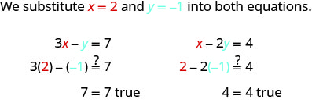
The ordered pair (2, −1) made both equations true. Therefore (2, −1) is a solution to this system.
Let’s try another ordered pair. Is the ordered pair (3, 2) a solution?
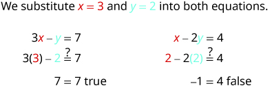
The ordered pair (3, 2) made one equation true, but it made the other equation false. Since it is not a solution to both equations, it is not a solution to this system.
Determine whether the ordered pair is a solution to the system:
ⓐ ⓑ
Solution
Solution
-
ⓐ
![The equations are x minus y equals minus 1 and 2 x minus y equals minus 5. We substitute x equal to minus 2 and y equal to minus 1 into both equations. So, x minus y equals minus 1 becomes minus 2 minus open parentheses minus 1 close parentheses equal to or not equal to minus 1. Simplifying, we get minus 1 equals minus 1 which is correct. The equation 2 x minus y equals minus 5 becomes 2 times minus 2 minus open parentheses minus 1 close parentheses equal to or not equal to minus 5. Simplifying, we get minus 3 not equal to minus 5. Hence, the ordered pair minus 2, minus 1 does not make both equations true. So, it is not a solution.](../../media/CNX_ElemAlg_Figure_05_01_003_img_new.jpg)
(–2, –1) does not make both equations true. (–2, –1) is not a solution.
ⓑ
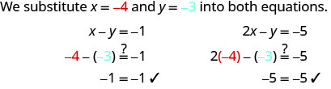
(–4, –3) does make both equations true. (–4, –3) is a solution.
Solve a System of Linear Equations by Graphing
In this chapter we will use three methods to solve a system of linear equations. The first method we’ll use is graphing.
The graph of a linear equation is a line. Each point on the line is a solution to the equation. For a system of two equations, we will graph two lines. Then we can see all the points that are solutions to each equation. And, by finding what the lines have in common, we’ll find the solution to the system.
Most linear equations in one variable have one solution, but we saw that some equations, called contradictions, have no solutions and for other equations, called identities, all numbers are solutions.
Similarly, when we solve a system of two linear equations represented by a graph of two lines in the same plane, there are three possible cases, as shown in Figure 1:
![This figure shows three x y-coordinate planes. The first plane shows two lines which intersect at one point. Under the graph it says, “The lines intersect. Intersecting lines have one point in common. There is one solution to this system.” The second x y-coordinate plane shows two parallel lines. Under the graph it says, “The lines are parallel. Parallel lines have no points in common. There is no solution to this system.” The third x y-coordinate plane shows one line. Under the graph it says, “Both equations give the same line. Because we have just one line, there are infinitely many solutions.”](../../media/CNX_ElemAlg_Figure_05_01_005_img_new.jpg)
For the first example of solving a system of linear equations in this section and in the next two sections, we will solve the same system of two linear equations. But we’ll use a different method in each section. After seeing the third method, you’ll decide which method was the most convenient way to solve this system.
How to Solve a System of Linear Equations by Graphing
Solve the system by graphing:
Solution
Solution
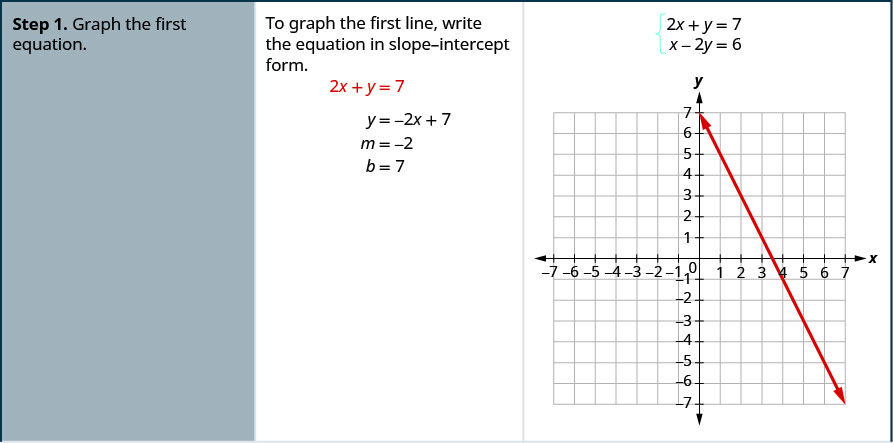
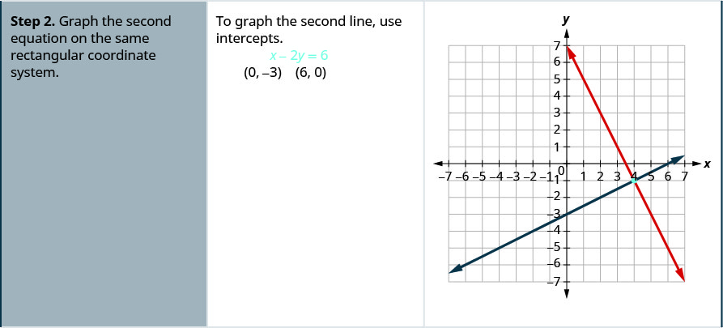
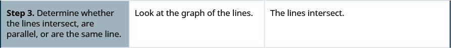
![The fourth row reads, “Step 4. Identify the solution to the system. If the lines intersect, identify the point of intersection. Check to make sure it is a solution to both equations. This is the solution to the system. If the lines are parallel, the system has no solution. If the lines are the same, the system has an infinite number of solutions.” Then it reads, “Since the lines intersect, find the point of intersection. Check the point in both equations.” Finally it reads, “The lines intersect at (4, -1). It then uses substitution to show that, “The solution is (4, -1).”](../../media/CNX_ElemAlg_Figure_05_01_006d_img_new.jpg)
The steps to use to solve a system of linear equations by graphing are shown below.
Solve the system by graphing:
Solution
Solution
| Find the slope and y-intercept of the first equation. |
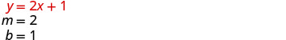 |
| Find the slope and y-intercept of the first equation. |
|
| Graph the two lines. | |
| Determine the point of intersection. | The lines intersect at (1, 3). |
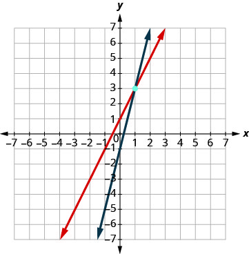 |
|
| Check the solution in both equations. | |
| The solution is (1, 3). |
Both equations in Example 3 were given in slope–intercept form. This made it easy for us to quickly graph the lines. In the next example, we’ll first re-write the equations into slope–intercept form.
Solve the system by graphing:
Solution
Solution
| Solve the first equation for y. Find the slope and y-intercept. Solve the second equation for y. Find the slope and y-intercept. |
|
| Graph the lines. | 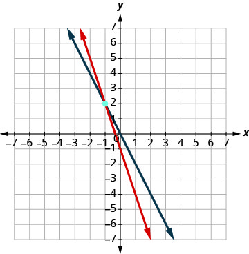 |
| Determine the point of intersection. | The lines intersect at (−1, 2). |
| Check the solution in both equations. | |
| The solution is (−1, 2). |
Usually when equations are given in standard form, the most convenient way to graph them is by using the intercepts. We’ll do this in Example 5.
Solve the system by graphing:
Solution
Solution
We will find the x- and y-intercepts of both equations and use them to graph the lines.
| To find the intercepts, let x = 0 and solve for y, then let y = 0 and solve for x. |
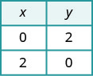 |
|
| To find the intercepts, let x = 0 then let y = 0. |
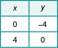 |
|
| Graph the line. | 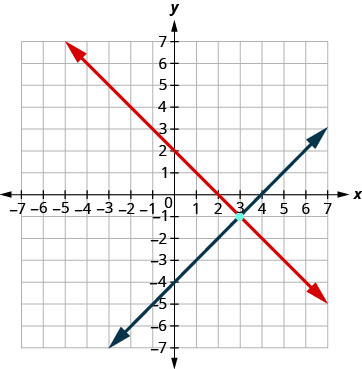 |
|
| Determine the point of intersection. | The lines intersect at (3, −1). | |
| Check the solution in both equations. |
The solution is (3, −1). |
Do you remember how to graph a linear equation with just one variable? It will be either a vertical or a horizontal line.
Solve the system by graphing:
Solution
Solution
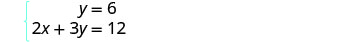 |
|
| We know the first equation represents a horizontal line whose y-intercept is 6. |
|
| The second equation is most conveniently graphed using intercepts. |
|
| To find the intercepts, let x = 0 and then y = 0. | 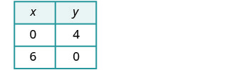 |
| Graph the lines. | 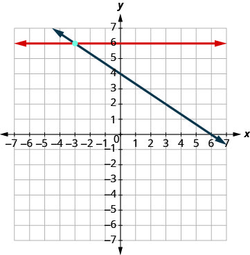 |
| Determine the point of intersection. | The lines intersect at (−3, 6). |
| Check the solution to both equations. | |
| The solution is (−3, 6). |
In all the systems of linear equations so far, the lines intersected and the solution was one point. In the next two examples, we’ll look at a system of equations that has no solution and at a system of equations that has an infinite number of solutions.
Solve the system by graphing:
Solution
Solution
| To graph the first equation, we will use its slope and y-intercept. |
|
| To graph the second equation, we will use the intercepts. |
|
| Graph the lines. | 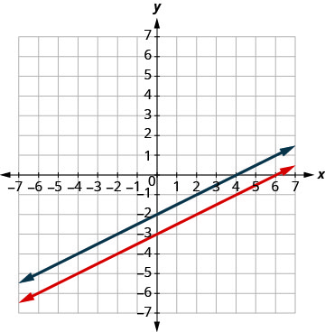 |
| Determine the point of intersection. | The lines are parallel. |
| Since no point is on both lines, there is no ordered pair that makes both equations true. There is no solution to this system. |
Solve the system by graphing:
Solution
Solution
| Find the slope and y-intercept of the first equation. |
|
| Find the intercepts of the second equation. | |
| Graph the lines. | 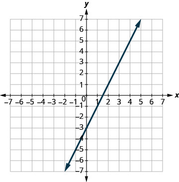 |
| Determine the point of intersection. | The lines are the same! |
| Since every point on the line makes both equations true, there are infinitely many ordered pairs that make both equations true. |
|
| There are infinitely many solutions to this system. |
If you write the second equation in Example 8 in slope-intercept form, you may recognize that the equations have the same slope and same y-intercept.
When we graphed the second line in the last example, we drew it right over the first line. We say the two lines are coincident. Coincident lines have the same slope and same y-intercept.
Determine the Number of Solutions of a Linear System
There will be times when we will want to know how many solutions there will be to a system of linear equations, but we might not actually have to find the solution. It will be helpful to determine this without graphing.
We have seen that two lines in the same plane must either intersect or are parallel. The systems of equations in Example 2 through Example 6 all had two intersecting lines. Each system had one solution.
A system with parallel lines, like Example 7, has no solution. What happened in Example 8? The equations have coincident lines, and so the system had infinitely many solutions.
We’ll organize these results in Figure 2 below:
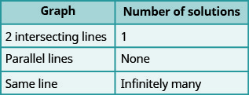
Parallel lines have the same slope but different y-intercepts. So, if we write both equations in a system of linear equations in slope–intercept form, we can see how many solutions there will be without graphing! Look at the system we solved in Example 7.
The two lines have the same slope but different y-intercepts. They are parallel lines.
Figure 3 shows how to determine the number of solutions of a linear system by looking at the slopes and intercepts.
![This table is entitled “Number of Solutions of a Linear System of Equations.” There are four columns. The columns are labeled, “Slopes,” “Intercepts,” “Type of Lines,” “Number of Solutions.” Under “Slopes” are “Different,” “Same,” and “Same.” Under “Intercepts,” the first cell is blank, then the words “Different” and “Same” appear. Under “Types of Lines” are the words, “Intersecting,” “Parallel,” and “Coincident.” Under “Number of Solutions” are “1 point,” “No Solution,” and “Infinitely many solutions.”](../../media/CNX_ElemAlg_Figure_05_01_019_img_new.jpg)
Let’s take one more look at our equations in Example 7 that gave us parallel lines.
When both lines were in slope-intercept form we had:
Do you recognize that it is impossible to have a single ordered pair that is a solution to both of those equations?
We call a system of equations like this an inconsistent system. It has no solution.
A system of equations that has at least one solution is called a consistent system.
We also categorize the equations in a system of equations by calling the equations independent or dependent. If two equations are independent equations, they each have their own set of solutions. Intersecting lines and parallel lines are independent.
If two equations are dependent, all the solutions of one equation are also solutions of the other equation. When we graph two dependent equations, we get coincident lines.
Let’s sum this up by looking at the graphs of the three types of systems. See Figure 4 and Figure 5.
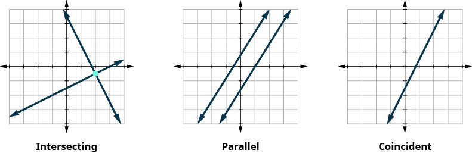
![This table has four columns and four rows. The columns are labeled, “Lines,” “Intersecting,” “Parallel,” and “Coincident.” In the first row under the labeled column “lines” it reads “Number of solutions.” Reading across, it tell us that an intersecting line contains 1 point, a parallel line provides no solution, and a coincident line has infinitely many solutions. A consistent/inconsistent line has consistent lines if they are intersecting, inconsistent lines if they are parallel and consistent if the lines are coincident. Finally, dependent and independent lines are considered independent if the lines intersect, they are also independent if the lines are parallel, and they are dependent if the lines are coincident.](../../media/CNX_ElemAlg_Figure_05_01_020_img_new.jpg)
Without graphing, determine the number of solutions and then classify the system of equations:
Solution
Solution
| We will compare the slopes and intercepts of the two lines. | |
| The first equation is already in slope-intercept form. | |
| Write the second equation in slope-intercept form. | |
| Find the slope and intercept of each line. | |
| Since the slopes are the same and -intercepts are different, the lines are parallel. |
A system of equations whose graphs are parallel lines has no solution and is inconsistent and independent.
Without graphing, determine the number of solutions and then classify the system of equations:
Solution
Solution
| We will compare the slope and intercepts of the two lines. | ||
| Write both equations in slope-intercept form. | ||
| Find the slope and intercept of each line. | ||
| Since the slopes are different, the lines intersect. | ||
A system of equations whose graphs are intersect has 1 solution and is consistent and independent.
Without graphing, determine the number of solutions and then classify the system of equations.
Solution
Solution
| We will compare the slopes and intercepts of the two lines. | |
| Write the first equation in slope-intercept form. | |
| The second equation is already in slope-intercept form. | |
| Since the slopes are the same, they have the same slope and same -intercept and so the lines are coincident. |
A system of equations whose graphs are coincident lines has infinitely many solutions and is consistent and dependent.
Solve Applications of Systems of Equations by Graphing
We will use the same problem solving strategy we used in Math Models to set up and solve applications of systems of linear equations. We’ll modify the strategy slightly here to make it appropriate for systems of equations.
Step 5 is where we will use the method introduced in this section. We will graph the equations and find the solution.
Sondra is making 10 quarts of punch from fruit juice and club soda. The number of quarts of fruit juice is 4 times the number of quarts of club soda. How many quarts of fruit juice and how many quarts of club soda does Sondra need?
Solution
Solution
Step 1. Read the problem.
Step 2. Identify what we are looking for.
We are looking for the number of quarts of fruit juice and the number of quarts of club soda that Sondra will need.
Step 3. Name what we are looking for. Choose variables to represent those quantities.
Let number of quarts of fruit juice.
number of quarts of club soda
Step 4. Translate into a system of equations.
![This figure shows sentences converted into equations. The first sentence reads, “The number of quarts of fruit juice and the number of quarts of club soda is 10. “Number of quarts of fruit juice” contains a curly bracket beneath the phrase with an “f” centered under the bracket. The “And” also contains a curly bracket beneath it and has a plus sign centered beneath it. “Number of quarts of club soda” contains a curly bracket with the variable “c” beneath it. And finally, the phrase “is 10” contains a curly bracket. Under this it reads equals 10. The second sentence reads, “The number of quarts of fruit juice is four times the number of quarts of club soda”. This sentence is set up similarly in that each phrase contains a curly bracket underneath. The variable “f” represents “The number of quarts of fruit juice”. An equal sign represents “is” and “4c” represents four times the number of quarts of club soda.”](../../media/CNX_ElemAlg_Figure_05_01_016_img_new.jpg)
We now have the system.
Step 5. Solve the system of equations using good algebra techniques. 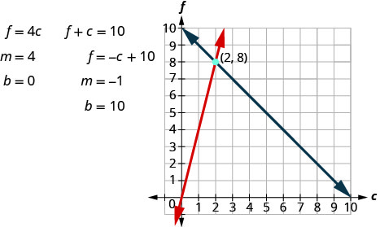
The point of intersection (2, 8) is the solution. This means Sondra needs 2 quarts of club soda and 8 quarts of fruit juice.
Step 6. Check the answer in the problem and make sure it makes sense.
Does this make sense in the problem?
Yes, the number of quarts of fruit juice, 8 is 4 times the number of quarts of club soda, 2.
Yes, 10 quarts of punch is 8 quarts of fruit juice plus 2 quarts of club soda.
Step 7. Answer the question with a complete sentence.
Sondra needs 8 quarts of fruit juice and 2 quarts of soda.
Key Concepts
-
To solve a system of linear equations by graphing
- Graph the first equation.
- Graph the second equation on the same rectangular coordinate system.
- Determine whether the lines intersect, are parallel, or are the same line.
- Identify the solution to the system.
If the lines intersect, identify the point of intersection. Check to make sure it is a solution to both equations. This is the solution to the system.
If the lines are parallel, the system has no solution.
If the lines are the same, the system has an infinite number of solutions. - Check the solution in both equations.
- Determine the number of solutions from the graph of a linear system
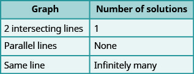
- Determine the number of solutions of a linear system by looking at the slopes and intercepts
![This table is entitled “Number of Solutions of a Linear System of Equations.” There are four columns. The columns are labeled, “Slopes,” “Intercepts,” “Type of Lines,” “Number of Solutions.” Under “Slopes” are “Different,” “Same,” and “Same.” Under “Intercepts,” the first cell is blank, then the words “Different” and “Same” appear. Under “Types of Lines” are the words, “Intersecting,” “Parallel,” and “Coincident.” Under “Number of Solutions” are “1 point,” “No Solution,” and “Infinitely many solutions.”](../../media/CNX_ElemAlg_Figure_05_01_023_img_new.jpg)
- Determine the number of solutions and how to classify a system of equations
![This table has four columns and four rows. The columns are labeled, “Lines,” “Intersecting,” “Parallel,” and “Coincident.” In the first row under the labeled column “lines” it reads “Number of solutions.” Reading across, it tell us that an intersecting line contains 1 point, a parallel line provides no solution, and a coincident line has infinitely many solutions. A consistent/inconsistent line has consistent lines if they are intersecting, inconsistent lines if they are parallel and consistent if the lines are coincident. Finally, dependent and independent lines are considered independent if the lines intersect, they are also independent if the lines are parallel, and they are dependent if the lines are coincident.](../../media/CNX_ElemAlg_Figure_05_01_024_img_new.jpg)
-
Problem Solving Strategy for Systems of Linear Equations
- Read the problem. Make sure all the words and ideas are understood.
- Identify what we are looking for.
- Name what we are looking for. Choose variables to represent those quantities.
- Translate into a system of equations.
- Solve the system of equations using good algebra techniques.
- Check the answer in the problem and make sure it makes sense.
- Answer the question with a complete sentence.
Practice Makes Perfect
Determine Whether an Ordered Pair is a Solution of a System of Equations. In the following exercises, determine if the following points are solutions to the given system of equations.
ⓐ ⓑ
Solution
ⓐ yes ⓑ no
ⓐ ⓑ
ⓐ ⓑ
Solution
ⓐ yes ⓑ no
ⓐ ⓑ
ⓐ ⓑ
Solution
ⓐ yes ⓑ no
ⓐ ⓑ
ⓐ ⓑ
Solution
ⓐ no ⓑ yes
ⓐ ⓑ
Solve a System of Linear Equations by Graphing In the following exercises, solve the following systems of equations by graphing.
Solution
Solution
Solution
Solution
Solution
Solution
Solution
Solution
Solution
Solution
Solution
Solution
Solution
Solution
Solution
Solution
no solution
Solution
no solution
Solution
infinitely many solutions
Solution
infinitely many solutions
Solution
infinitely many solutions
Solution
Determine the Number of Solutions of a Linear System Without graphing the following systems of equations, determine the number of solutions and then classify the system of equations.
Solution
0 solutions
Solution
0 solutions
Solution
no solutions, inconsistent, independent
Solution
consistent, 1 solution
Solution
infinitely many solutions
Solution
infinitely many solutions
Solve Applications of Systems of Equations by Graphing In the following exercises, solve.
Molly is making strawberry infused water. For each ounce of strawberry juice, she uses three times as many ounces of water. How many ounces of strawberry juice and how many ounces of water does she need to make 64 ounces of strawberry infused water?
Solution
Molly needs 16 ounces of strawberry juice and 48 ounces of water.
Jamal is making a snack mix that contains only pretzels and nuts. For every ounce of nuts, he will use 2 ounces of pretzels. How many ounces of pretzels and how many ounces of nuts does he need to make 45 ounces of snack mix?
Enrique is making a party mix that contains raisins and nuts. For each ounce of nuts, he uses twice the amount of raisins. How many ounces of nuts and how many ounces of raisins does he need to make 24 ounces of party mix?
Solution
Enrique needs 8 ounces of nuts and 16 ounces of water.
Owen is making lemonade from concentrate. The number of quarts of water he needs is 4 times the number of quarts of concentrate. How many quarts of water and how many quarts of concentrate does Owen need to make 100 quarts of lemonade?
Everyday Math
Leo is planning his spring flower garden. He wants to plant tulip and daffodil bulbs. He will plant 6 times as many daffodil bulbs as tulip bulbs. If he wants to plant 350 bulbs, how many tulip bulbs and how many daffodil bulbs should he plant?
Solution
Leo should plant 50 tulips and 300 daffodils.
A marketing company surveys 1,200 people. They surveyed twice as many females as males. How many males and females did they survey?
Writing Exercises
In a system of linear equations, the two equations have the same slope. Describe the possible solutions to the system.
Solution
Given that it is only known that the slopes of both linear equations are the same, there are either no solutions (the graphs of the equations are parallel) or infinitely many.
In a system of linear equations, the two equations have the same intercepts. Describe the possible solutions to the system.
Self Check
After completing the exercises, use this checklist to evaluate your mastery of the objectives of this section.

If most of your checks were:
…confidently. Congratulations! You have achieved the objectives in this section. Reflect on the study skills you used so that you can continue to use them. What did you do to become confident of your ability to do these things? Be specific.
…with some help. This must be addressed quickly because topics you do not master become potholes in your road to success. In math every topic builds upon previous work. It is important to make sure you have a strong foundation before you move on. Whom can you ask for help? Your fellow classmates and instructor are good resources. Is there a place on campus where math tutors are available? Can your study skills be improved?
…no - I don’t get it! This is a warning sign and you must not ignore it. You should get help right away or you will quickly be overwhelmed. See your instructor as soon as you can to discuss your situation. Together you can come up with a plan to get you the help you need.